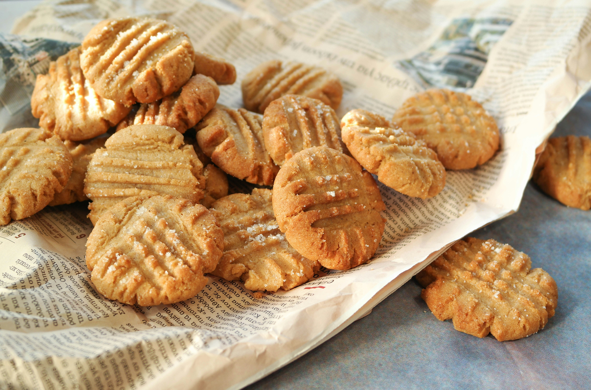

Peanut Butter Cookies

Description:
These 3-ingredient peanut butter cookies are one of the easiest cookies
you will ever make. Perfect for gluten-free bakers or anyone craving cookies
in a hurry! A family favorite that will have everyone coming back for more!
🥚 ingredients:
- 1 cup peanut butter
- 1 cup white sugar
- 1 large egg
📝 Steps:
- Gather all ingredients. Preheat the oven to 175 degrees C.
-
Mix peanut butter, sugar, and egg together in a bowl using an electric mixer until
smooth and creamy.
-
Roll dough into 1-inch balls and place 2 inches apart on ungreased baking
sheets.
-
Flatten each with a fork, making a criss-cross pattern. Bake in the preheated
oven until edges are firm, about 10 minutes. Cool on the baking sheet briefly
before removing to a wire rack to cool completely.